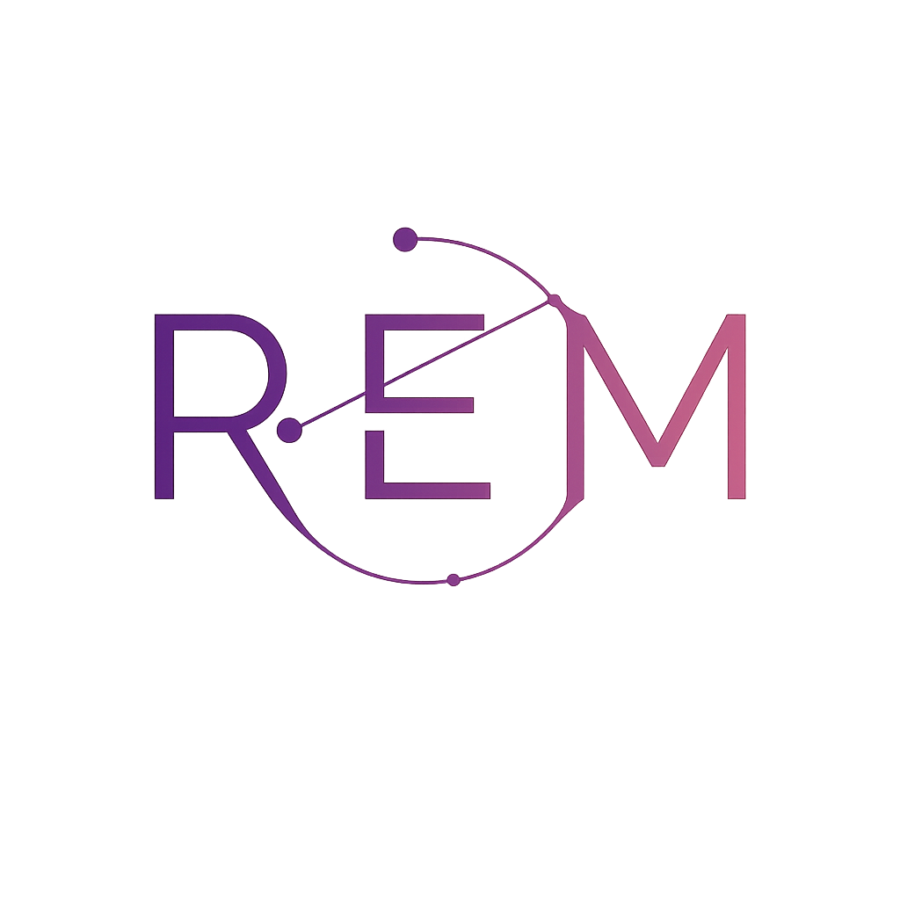

Levanta tu voz, no tu miedo.
Mujeres registradas y validadas: 0 / 50
Somos un equipo interdisciplinar que ofrece atención integral y segura a mujeres en situación de violencia.
Nuestro equipo está compuesto por profesionales de diversas disciplinas que colaboran para proporcionar un apoyo integral y especializado, garantizando una atención completa y segura en todos los aspectos necesarios.
Desarrollamos materiales como guías, vídeos e infografías destinados al empoderamiento y formación de las usuarias.
Además, utilizamos registros anonimizados para el seguimiento y mejora continua del servicio.
Contamos con una plataforma web que incorpora cifrado avanzado, herramientas de videoconferencia seguras y sistemas de control para garantizar la seguridad y moderación en todo momento.
1) Respeto y seguridad: mantén un trato respetuoso y evita compartir datos personales sensibles en espacios públicos.
2) Veracidad de la información: proporciona datos reales para facilitar un apoyo adecuado.
3) Uso responsable: evita difundir contenido que pueda resultar dañino, ofensivo o intimidatorio.
4) Privacidad: no compartas credenciales ni información de otras usuarias.
5) Participación activa: mantén disposición para participar en los recursos y actividades de la plataforma.
6) Aceptación y privacidad: usa REM aceptando expresamente las condiciones de uso y respetando siempre la confidencialidad de todas las personas.
7) Privacidad y ciberseguridad: protege tus datos, mantén el anonimato cuando sea necesario y utiliza la plataforma en entornos seguros.
8) Respeto y no discriminación: actúa siempre con respeto, empatía y sin discriminar a nadie.
9) Contenido ofensivo: quedan prohibidos insultos, amenazas o publicaciones ofensivas.
10) Confidencialidad y anonimato: respeta la privacidad y el anonimato de todas las personas usuarias.
11) Protección de datos: no compartas datos personales ni realices capturas de pantalla.
12) Foros y chats: son espacios de apoyo, no de juicio ni confrontación.
13) Consecuencias: el incumplimiento de las normas puede implicar suspensión o expulsión de la plataforma.